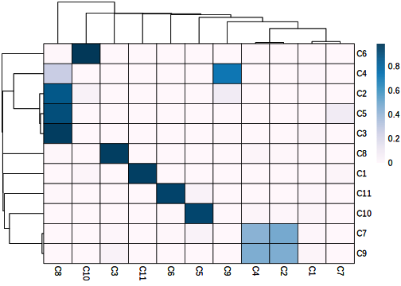
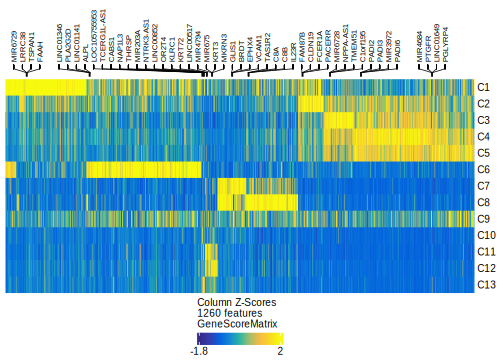

21.2 Analysis of multiome data in ArchR
With our multiome project created, we’re now ready to start analysis. It is worth mentioning that the analyses below aren’t altogether different from the analyses presented in the rest of this manual. Because of the inclusion of gene scores, ArchR was already performing analyses that leveraged gene-level information and scATAC-seq information. The primary difference between ATAC-only analysis and multiomic analysis is that we are using the GeneExpressionMatrix instead of the GeneScoreMatrix.
The first thing we will do is perform dimensionality reduction using addIterativeLSI(). We can do this on the scATAC-seq data via the TileMatrix and on the scRNA-seq data via the GeneExpressionMatrix.
projMulti2 <- addIterativeLSI(
ArchRProj = projMulti2,
clusterParams = list(
resolution = 0.2,
sampleCells = 10000,
n.start = 10
),
saveIterations = FALSE,
useMatrix = "TileMatrix",
depthCol = "nFrags",
name = "LSI_ATAC"
)
## Checking Inputs...
## ArchR logging to : ArchRLogs/ArchR-addIterativeLSI-963a5675f-Date-2025-02-06_Time-03-48-11.040714.log
## If there is an issue, please report to github with logFile!
## 2025-02-06 03:48:12.941967 : Computing Total Across All Features, 0.019 mins elapsed.
## 2025-02-06 03:48:14.967981 : Computing Top Features, 0.053 mins elapsed.
## ###########
## 2025-02-06 03:48:16.617515 : Running LSI (1 of 2) on Top Features, 0.08 mins elapsed.
## ###########
## 2025-02-06 03:48:16.635495 : Creating Partial Matrix, 0.08 mins elapsed.
## 2025-02-06 03:48:29.907606 : Computing LSI, 0.302 mins elapsed.
## 2025-02-06 03:49:12.988642 : Identifying Clusters, 1.02 mins elapsed.
## 2025-02-06 03:49:39.474452 : Identified 5 Clusters, 1.461 mins elapsed.
## 2025-02-06 03:49:39.504991 : Creating Cluster Matrix on the total Group Features, 1.462 mins elapsed.
## 2025-02-06 03:50:14.790914 : Computing Variable Features, 2.05 mins elapsed.
## ###########
## 2025-02-06 03:50:14.896647 : Running LSI (2 of 2) on Variable Features, 2.051 mins elapsed.
## ###########
## 2025-02-06 03:50:14.916993 : Creating Partial Matrix, 2.052 mins elapsed.
## 2025-02-06 03:50:29.223764 : Computing LSI, 2.29 mins elapsed.
## 2025-02-06 03:50:59.709546 : Finished Running IterativeLSI, 2.798 mins elapsed.projMulti2 <- addIterativeLSI(
ArchRProj = projMulti2,
clusterParams = list(
resolution = 0.2,
sampleCells = 10000,
n.start = 10
),
saveIterations = FALSE,
useMatrix = "GeneExpressionMatrix",
depthCol = "Gex_nUMI",
varFeatures = 2500,
firstSelection = "variable",
binarize = FALSE,
name = "LSI_RNA"
)
## Checking Inputs...
## ArchR logging to : ArchRLogs/ArchR-addIterativeLSI-966297cf7-Date-2025-02-06_Time-03-50-59.736587.log
## If there is an issue, please report to github with logFile!
## 2025-02-06 03:51:01.644262 : Computing Variability Across All Features, 0.02 mins elapsed.
## 2025-02-06 03:51:03.96835 : Computing Variable Features, 0.058 mins elapsed.
## ###########
## 2025-02-06 03:51:07.056315 : Running LSI (1 of 2) on Top Features, 0.11 mins elapsed.
## ###########
## 2025-02-06 03:51:07.074664 : Creating Partial Matrix, 0.11 mins elapsed.
## 2025-02-06 03:51:12.43333 : Computing LSI, 0.199 mins elapsed.
## 2025-02-06 03:51:31.534792 : Identifying Clusters, 0.518 mins elapsed.
## 2025-02-06 03:51:57.528274 : Identified 8 Clusters, 0.951 mins elapsed.
## 2025-02-06 03:51:57.557746 : Creating Cluster Matrix on the total Group Features, 0.952 mins elapsed.
## 2025-02-06 03:52:33.006265 : Computing Variable Features, 1.542 mins elapsed.
## ###########
## 2025-02-06 03:52:33.052432 : Running LSI (2 of 2) on Variable Features, 1.543 mins elapsed.
## ###########
## 2025-02-06 03:52:33.077571 : Creating Partial Matrix, 1.544 mins elapsed.
## 2025-02-06 03:52:38.518207 : Computing LSI, 1.634 mins elapsed.
## 2025-02-06 03:52:57.807005 : Finished Running IterativeLSI, 1.956 mins elapsed.We can also create a dimensionality reduction that uses information from both the scATAC-seq and scRNA-seq data. We will name this reducedDims object “LSI_Combined”.
projMulti2 <- addCombinedDims(projMulti2, reducedDims = c("LSI_ATAC", "LSI_RNA"), name = "LSI_Combined")We can create UMAP embeddings for each of these dimensionality reductions.
projMulti2 <- addUMAP(projMulti2, reducedDims = "LSI_ATAC", name = "UMAP_ATAC", minDist = 0.8, force = TRUE)
## 03:52:57 UMAP embedding parameters a = 0.2321 b = 1.681
## 03:52:57 Read 5323 rows and found 30 numeric columns
## 03:52:57 Using Annoy for neighbor search, n_neighbors = 40
## 03:52:57 Building Annoy index with metric = cosine, n_trees = 50
## 0% 10 20 30 40 50 60 70 80 90 100%
## [----|----|----|----|----|----|----|----|----|----|
## **************************************************|
## 03:52:58 Writing NN index file to temp file /tmp/RtmpCdKDaq/file9602e5435
## 03:52:58 Searching Annoy index using 12 threads, search_k = 4000
## 03:52:58 Annoy recall = 100%
## 03:53:01 Commencing smooth kNN distance calibration using 12 threads with target n_neighbors = 40
## 03:53:02 Initializing from normalized Laplacian + noise (using RSpectra)
## 03:53:02 Commencing optimization for 500 epochs, with 303684 positive edges
## 03:53:08 Optimization finished
## 03:53:08 Creating temp model dir /tmp/RtmpCdKDaq/dir975298d03
## 03:53:08 Creating dir /tmp/RtmpCdKDaq/dir975298d03
## 03:53:28 Changing to /tmp/RtmpCdKDaq/dir975298d03
## 03:53:28 Creating /workspace/ArchR/ArchR_Website_Testing/bookdown/Save-ProjMulti2/Embeddings/Save-Uwot-UMAP-Params-LSI_ATAC-979ae2cf1-Date-2025-02-06_Time-03-53-08.893336.tar
projMulti2 <- addUMAP(projMulti2, reducedDims = "LSI_RNA", name = "UMAP_RNA", minDist = 0.8, force = TRUE)
## 03:53:30 UMAP embedding parameters a = 0.2321 b = 1.681
## 03:53:30 Read 5323 rows and found 30 numeric columns
## 03:53:30 Using Annoy for neighbor search, n_neighbors = 40
## 03:53:30 Building Annoy index with metric = cosine, n_trees = 50
## 0% 10 20 30 40 50 60 70 80 90 100%
## [----|----|----|----|----|----|----|----|----|----|
## **************************************************|
## 03:53:30 Writing NN index file to temp file /tmp/RtmpCdKDaq/file963928c07
## 03:53:30 Searching Annoy index using 12 threads, search_k = 4000
## 03:53:30 Annoy recall = 100%
## 03:53:31 Commencing smooth kNN distance calibration using 12 threads with target n_neighbors = 40
## 03:53:34 Initializing from normalized Laplacian + noise (using RSpectra)
## 03:53:34 Commencing optimization for 500 epochs, with 296148 positive edges
## 03:53:41 Optimization finished
## 03:53:41 Creating temp model dir /tmp/RtmpCdKDaq/dir9d2360c0
## 03:53:41 Creating dir /tmp/RtmpCdKDaq/dir9d2360c0
## 03:53:59 Changing to /tmp/RtmpCdKDaq/dir9d2360c0
## 03:53:59 Creating /workspace/ArchR/ArchR_Website_Testing/bookdown/Save-ProjMulti2/Embeddings/Save-Uwot-UMAP-Params-LSI_RNA-94663e4c9-Date-2025-02-06_Time-03-53-41.353109.tar
projMulti2 <- addUMAP(projMulti2, reducedDims = "LSI_Combined", name = "UMAP_Combined", minDist = 0.8, force = TRUE)
## 03:53:59 UMAP embedding parameters a = 0.2321 b = 1.681
## 03:53:59 Read 5323 rows and found 60 numeric columns
## 03:53:59 Using Annoy for neighbor search, n_neighbors = 40
## 03:53:59 Building Annoy index with metric = cosine, n_trees = 50
## 0% 10 20 30 40 50 60 70 80 90 100%
## [----|----|----|----|----|----|----|----|----|----|
## **************************************************|
## 03:54:00 Writing NN index file to temp file /tmp/RtmpCdKDaq/file9425f4266
## 03:54:00 Searching Annoy index using 12 threads, search_k = 4000
## 03:54:00 Annoy recall = 100%
## 03:54:03 Commencing smooth kNN distance calibration using 12 threads with target n_neighbors = 40
## 03:54:05 Initializing from normalized Laplacian + noise (using RSpectra)
## 03:54:06 Commencing optimization for 500 epochs, with 301884 positive edges
## 03:54:12 Optimization finished
## 03:54:12 Creating temp model dir /tmp/RtmpCdKDaq/dir93527d07d
## 03:54:12 Creating dir /tmp/RtmpCdKDaq/dir93527d07d
## 03:54:29 Changing to /tmp/RtmpCdKDaq/dir93527d07d
## 03:54:29 Creating /workspace/ArchR/ArchR_Website_Testing/bookdown/Save-ProjMulti2/Embeddings/Save-Uwot-UMAP-Params-LSI_Combined-9450dfff8-Date-2025-02-06_Time-03-54-12.902206.tarAnd then call clusters for each.
projMulti2 <- addClusters(projMulti2, reducedDims = "LSI_ATAC", name = "Clusters_ATAC", resolution = 0.4, force = TRUE)
## ArchR logging to : ArchRLogs/ArchR-addClusters-9406ddccd-Date-2025-02-06_Time-03-54-31.229961.log
## If there is an issue, please report to github with logFile!
## 2025-02-06 03:54:31.906183 : Running Seurats FindClusters (Stuart et al. Cell 2019), 0.001 mins elapsed.
## Computing nearest neighbor graph
## Computing SNN
## Modularity Optimizer version 1.3.0 by Ludo Waltman and Nees Jan van Eck
##
## Number of nodes: 5323
## Number of edges: 232328
##
## Running Louvain algorithm...
## Maximum modularity in 10 random starts: 0.9148
## Number of communities: 11
## Elapsed time: 0 seconds
## 2025-02-06 03:54:57.687669 : Testing Biased Clusters, 0.431 mins elapsed.
## 2025-02-06 03:54:57.734341 : Testing Outlier Clusters, 0.432 mins elapsed.
## 2025-02-06 03:54:57.740222 : Assigning Cluster Names to 11 Clusters, 0.432 mins elapsed.
## 2025-02-06 03:54:57.771847 : Finished addClusters, 0.432 mins elapsed.
projMulti2 <- addClusters(projMulti2, reducedDims = "LSI_RNA", name = "Clusters_RNA", resolution = 0.4, force = TRUE)
## ArchR logging to : ArchRLogs/ArchR-addClusters-92e0f613a-Date-2025-02-06_Time-03-54-57.780312.log
## If there is an issue, please report to github with logFile!
## 2025-02-06 03:54:58.432856 : Running Seurats FindClusters (Stuart et al. Cell 2019), 0.001 mins elapsed.
## Computing nearest neighbor graph
## Computing SNN
## Modularity Optimizer version 1.3.0 by Ludo Waltman and Nees Jan van Eck
##
## Number of nodes: 5323
## Number of edges: 214403
##
## Running Louvain algorithm...
## Maximum modularity in 10 random starts: 0.9122
## Number of communities: 11
## Elapsed time: 0 seconds
## 2025-02-06 03:55:23.552224 : Testing Biased Clusters, 0.419 mins elapsed.
## 2025-02-06 03:55:23.568193 : Testing Outlier Clusters, 0.42 mins elapsed.
## 2025-02-06 03:55:23.574057 : Assigning Cluster Names to 11 Clusters, 0.42 mins elapsed.
## 2025-02-06 03:55:23.60245 : Finished addClusters, 0.42 mins elapsed.
projMulti2 <- addClusters(projMulti2, reducedDims = "LSI_Combined", name = "Clusters_Combined", resolution = 0.4, force = TRUE)
## ArchR logging to : ArchRLogs/ArchR-addClusters-95d77b92e-Date-2025-02-06_Time-03-55-23.610747.log
## If there is an issue, please report to github with logFile!
## 2025-02-06 03:55:24.24496 : Running Seurats FindClusters (Stuart et al. Cell 2019), 0.001 mins elapsed.
## Computing nearest neighbor graph
## Computing SNN
## Modularity Optimizer version 1.3.0 by Ludo Waltman and Nees Jan van Eck
##
## Number of nodes: 5323
## Number of edges: 233729
##
## Running Louvain algorithm...
## Maximum modularity in 10 random starts: 0.9241
## Number of communities: 13
## Elapsed time: 0 seconds
## 2025-02-06 03:55:49.45903 : Testing Biased Clusters, 0.421 mins elapsed.
## 2025-02-06 03:55:49.475444 : Testing Outlier Clusters, 0.421 mins elapsed.
## 2025-02-06 03:55:49.482584 : Assigning Cluster Names to 13 Clusters, 0.421 mins elapsed.
## 2025-02-06 03:55:49.518816 : Finished addClusters, 0.422 mins elapsed.We can plot how each of these dimensionality reductions look with respect to the clusters called in “LSI_Combined”.
p1 <- plotEmbedding(projMulti2, name = "Clusters_Combined", embedding = "UMAP_ATAC", size = 1, labelAsFactors=F, labelMeans=F)
## ArchR logging to : ArchRLogs/ArchR-plotEmbedding-9125fa73e-Date-2025-02-06_Time-03-55-49.542472.log
## If there is an issue, please report to github with logFile!
## Getting UMAP Embedding
## ColorBy = cellColData
## Plotting Embedding
## 1
## ArchR logging successful to : ArchRLogs/ArchR-plotEmbedding-9125fa73e-Date-2025-02-06_Time-03-55-49.542472.log
p2 <- plotEmbedding(projMulti2, name = "Clusters_Combined", embedding = "UMAP_RNA", size = 1, labelAsFactors=F, labelMeans=F)
## ArchR logging to : ArchRLogs/ArchR-plotEmbedding-95bf8e7f1-Date-2025-02-06_Time-03-55-51.61776.log
## If there is an issue, please report to github with logFile!
## Getting UMAP Embedding
## ColorBy = cellColData
## Plotting Embedding
## 1
## ArchR logging successful to : ArchRLogs/ArchR-plotEmbedding-95bf8e7f1-Date-2025-02-06_Time-03-55-51.61776.log
p3 <- plotEmbedding(projMulti2, name = "Clusters_Combined", embedding = "UMAP_Combined", size = 1, labelAsFactors=F, labelMeans=F)
## ArchR logging to : ArchRLogs/ArchR-plotEmbedding-9484f6313-Date-2025-02-06_Time-03-55-53.634987.log
## If there is an issue, please report to github with logFile!
## Getting UMAP Embedding
## ColorBy = cellColData
## Plotting Embedding
## 1
## ArchR logging successful to : ArchRLogs/ArchR-plotEmbedding-9484f6313-Date-2025-02-06_Time-03-55-53.634987.log
p <- lapply(list(p1,p2,p3), function(x){
x + guides(color = "none", fill = "none") +
theme_ArchR(baseSize = 6.5) +
theme(plot.margin = unit(c(0.1, 0.1, 0.1, 0.1), "cm")) +
theme(
axis.text.x=element_blank(),
axis.ticks.x=element_blank(),
axis.text.y=element_blank(),
axis.ticks.y=element_blank()
)
})
do.call(cowplot::plot_grid, c(list(ncol = 3),p))
We can also save this to a PDF file.
plotPDF(p1, p2, p3, name = "UMAP-scATAC-scRNA-Combined", addDOC = FALSE)
## Plotting Ggplot!
## Plotting Ggplot!
## Plotting Ggplot!You’ll notice that there are some differences between the cluster residence of cells in the scATAC-seq space and cells in the scRNA-seq space. We can visualize these differences using a confusion matrix.
cM_atac_rna <- confusionMatrix(paste0(projMulti2$Clusters_ATAC), paste0(projMulti2$Clusters_RNA))
cM_atac_rna <- cM_atac_rna / Matrix::rowSums(cM_atac_rna)
library(pheatmap)
p_atac_rna <- pheatmap::pheatmap(
mat = as.matrix(cM_atac_rna),
color = paletteContinuous("whiteBlue"),
border_color = "black"
)
p_atac_rna
Nearly all of the operations that you will want to do downstream are equivalent to what is shown throughout the manual for the scATAC-seq-only analyses so we wont go into them here. As an example, to get peak-to-gene links from multiome data, we could use the following code.
pathToMacs2 <- findMacs2()
## Searching For MACS2..
## Found with $PATH at /usr/local/bin/macs2
projMulti2 <- addGroupCoverages(ArchRProj = projMulti2, groupBy = "Clusters_Combined", verbose = FALSE)
## ArchR logging to : ArchRLogs/ArchR-addGroupCoverages-915f0d6b1-Date-2025-02-06_Time-03-56-03.619249.log
## If there is an issue, please report to github with logFile!
## C1 (1 of 13) : CellGroups N = 2
## C2 (2 of 13) : CellGroups N = 2
## C3 (3 of 13) : CellGroups N = 2
## C4 (4 of 13) : CellGroups N = 2
## C5 (5 of 13) : CellGroups N = 2
## C6 (6 of 13) : CellGroups N = 2
## C7 (7 of 13) : CellGroups N = 2
## C8 (8 of 13) : CellGroups N = 2
## C9 (9 of 13) : CellGroups N = 2
## C10 (10 of 13) : CellGroups N = 2
## C11 (11 of 13) : CellGroups N = 2
## C12 (12 of 13) : CellGroups N = 2
## C13 (13 of 13) : CellGroups N = 2
## 2025-02-06 03:56:16.514205 : Creating Coverage Files!, 0.215 mins elapsed.
## 2025-02-06 03:56:16.515878 : Batch Execution w/ safelapply!, 0.215 mins elapsed.
## Number of Cells = 40
## Coverage File Exists!
## Added Coverage Group
## Added Metadata Group
## Added ArrowCoverage Class
## Added Coverage/Info
## Added Coverage/Info/CellNames
## Number of Cells = 40
## Coverage File Exists!
## Added Coverage Group
## Added Metadata Group
## Added ArrowCoverage Class
## Added Coverage/Info
## Added Coverage/Info/CellNames
## Number of Cells = 47
## Coverage File Exists!
## Added Coverage Group
## Added Metadata Group
## Added ArrowCoverage Class
## Added Coverage/Info
## Added Coverage/Info/CellNames
## Number of Cells = 40
## Coverage File Exists!
## Added Coverage Group
## Added Metadata Group
## Added ArrowCoverage Class
## Added Coverage/Info
## Added Coverage/Info/CellNames
## Number of Cells = 125
## Coverage File Exists!
## Added Coverage Group
## Added Metadata Group
## Added ArrowCoverage Class
## Added Coverage/Info
## Added Coverage/Info/CellNames
## Number of Cells = 120
## Coverage File Exists!
## Added Coverage Group
## Added Metadata Group
## Added ArrowCoverage Class
## Added Coverage/Info
## Added Coverage/Info/CellNames
## Number of Cells = 500
## Coverage File Exists!
## Added Coverage Group
## Added Metadata Group
## Added ArrowCoverage Class
## Added Coverage/Info
## Added Coverage/Info/CellNames
## Number of Cells = 304
## Coverage File Exists!
## Added Coverage Group
## Added Metadata Group
## Added ArrowCoverage Class
## Added Coverage/Info
## Added Coverage/Info/CellNames
## Number of Cells = 500
## Coverage File Exists!
## Added Coverage Group
## Added Metadata Group
## Added ArrowCoverage Class
## Added Coverage/Info
## Added Coverage/Info/CellNames
## Number of Cells = 40
## Coverage File Exists!
## Added Coverage Group
## Added Metadata Group
## Added ArrowCoverage Class
## Added Coverage/Info
## Added Coverage/Info/CellNames
## Number of Cells = 286
## Coverage File Exists!
## Added Coverage Group
## Added Metadata Group
## Added ArrowCoverage Class
## Added Coverage/Info
## Added Coverage/Info/CellNames
## Number of Cells = 185
## Coverage File Exists!
## Added Coverage Group
## Added Metadata Group
## Added ArrowCoverage Class
## Added Coverage/Info
## Added Coverage/Info/CellNames
## Number of Cells = 226
## Coverage File Exists!
## Added Coverage Group
## Added Metadata Group
## Added ArrowCoverage Class
## Added Coverage/Info
## Added Coverage/Info/CellNames
## Number of Cells = 192
## Coverage File Exists!
## Added Coverage Group
## Added Metadata Group
## Added ArrowCoverage Class
## Added Coverage/Info
## Added Coverage/Info/CellNames
## Number of Cells = 100
## Coverage File Exists!
## Added Coverage Group
## Added Metadata Group
## Added ArrowCoverage Class
## Added Coverage/Info
## Added Coverage/Info/CellNames
## Number of Cells = 95
## Coverage File Exists!
## Added Coverage Group
## Added Metadata Group
## Added ArrowCoverage Class
## Added Coverage/Info
## Added Coverage/Info/CellNames
## Number of Cells = 41
## Coverage File Exists!
## Added Coverage Group
## Added Metadata Group
## Added ArrowCoverage Class
## Added Coverage/Info
## Added Coverage/Info/CellNames
## Number of Cells = 40
## Coverage File Exists!
## Added Coverage Group
## Added Metadata Group
## Added ArrowCoverage Class
## Added Coverage/Info
## Added Coverage/Info/CellNames
## Number of Cells = 500
## Coverage File Exists!
## Added Coverage Group
## Added Metadata Group
## Added ArrowCoverage Class
## Added Coverage/Info
## Added Coverage/Info/CellNames
## Number of Cells = 45
## Coverage File Exists!
## Added Coverage Group
## Added Metadata Group
## Added ArrowCoverage Class
## Added Coverage/Info
## Added Coverage/Info/CellNames
## Number of Cells = 286
## Coverage File Exists!
## Added Coverage Group
## Added Metadata Group
## Added ArrowCoverage Class
## Added Coverage/Info
## Added Coverage/Info/CellNames
## Number of Cells = 40
## Coverage File Exists!
## Added Coverage Group
## Added Metadata Group
## Added ArrowCoverage Class
## Added Coverage/Info
## Added Coverage/Info/CellNames
## Number of Cells = 340
## Coverage File Exists!
## Added Coverage Group
## Added Metadata Group
## Added ArrowCoverage Class
## Added Coverage/Info
## Added Coverage/Info/CellNames
## Number of Cells = 40
## Coverage File Exists!
## Added Coverage Group
## Added Metadata Group
## Added ArrowCoverage Class
## Added Coverage/Info
## Added Coverage/Info/CellNames
## Number of Cells = 500
## Coverage File Exists!
## Added Coverage Group
## Added Metadata Group
## Added ArrowCoverage Class
## Added Coverage/Info
## Added Coverage/Info/CellNames
## Number of Cells = 67
## Coverage File Exists!
## Added Coverage Group
## Added Metadata Group
## Added ArrowCoverage Class
## Added Coverage/Info
## Added Coverage/Info/CellNames
## 2025-02-06 04:30:17.554117 : Adding Kmer Bias to Coverage Files!, 34.232 mins elapsed.
## Completed Kmer Bias Calculation
## Adding Kmer Bias (1 of 26)
## Adding Kmer Bias (2 of 26)
## Adding Kmer Bias (3 of 26)
## Adding Kmer Bias (4 of 26)
## Adding Kmer Bias (5 of 26)
## Adding Kmer Bias (6 of 26)
## Adding Kmer Bias (7 of 26)
## Adding Kmer Bias (8 of 26)
## Adding Kmer Bias (9 of 26)
## Adding Kmer Bias (10 of 26)
## Adding Kmer Bias (11 of 26)
## Adding Kmer Bias (12 of 26)
## Adding Kmer Bias (13 of 26)
## Adding Kmer Bias (14 of 26)
## Adding Kmer Bias (15 of 26)
## Adding Kmer Bias (16 of 26)
## Adding Kmer Bias (17 of 26)
## Adding Kmer Bias (18 of 26)
## Adding Kmer Bias (19 of 26)
## Adding Kmer Bias (20 of 26)
## Adding Kmer Bias (21 of 26)
## Adding Kmer Bias (22 of 26)
## Adding Kmer Bias (23 of 26)
## Adding Kmer Bias (24 of 26)
## Adding Kmer Bias (25 of 26)
## Adding Kmer Bias (26 of 26)
## 2025-02-06 04:35:25.79768 : Finished Creation of Coverage Files!, 39.37 mins elapsed.
## ArchR logging successful to : ArchRLogs/ArchR-addGroupCoverages-915f0d6b1-Date-2025-02-06_Time-03-56-03.619249.log
# projMulti2 <- addReproduciblePeakSet(ArchRProj = projMulti2, groupBy = "Clusters_Combined", pathToMacs2 = "/corces/home/rcorces/tools/python/p3.8.5/bin/macs2")
projMulti2 <- addReproduciblePeakSet(ArchRProj = projMulti2, groupBy = "Clusters_Combined", pathToMacs2 = pathToMacs2)
## ArchR logging to : ArchRLogs/ArchR-addReproduciblePeakSet-959b528b2-Date-2025-02-06_Time-04-35-26.047577.log
## If there is an issue, please report to github with logFile!
## Calling Peaks with Macs2
## 2025-02-06 04:35:26.635384 : Peak Calling Parameters!, 0.01 mins elapsed.
## Group nCells nCellsUsed nReplicates nMin nMax maxPeaks
## C1 C1 50 50 2 40 40 25000
## C2 C2 87 87 2 40 47 43500
## C3 C3 245 245 2 120 125 122500
## C4 C4 959 804 2 304 500 150000
## C5 C5 567 540 2 40 500 150000
## C6 C6 471 471 2 185 286 150000
## C7 C7 418 418 2 192 226 150000
## C8 C8 195 195 2 95 100 97500
## C9 C9 81 81 2 40 41 40500
## C10 C10 798 545 2 45 500 150000
## C11 C11 326 326 2 40 286 150000
## C12 C12 380 380 2 40 340 150000
## C13 C13 746 567 2 67 500 150000
## 2025-02-06 04:35:26.676293 : Batching Peak Calls!, 0.01 mins elapsed.
## 2025-02-06 04:35:26.835947 : Batch Execution w/ safelapply!, 0 mins elapsed.
## 2025-02-06 04:37:32.291989 : Identifying Reproducible Peaks!, 2.104 mins elapsed.
## 2025-02-06 04:37:43.557129 : Creating Union Peak Set!, 2.292 mins elapsed.
## Converged after 9 iterations!
## Plotting Ggplot!
## 2025-02-06 04:37:51.701386 : Finished Creating Union Peak Set (165313)!, 2.428 mins elapsed.
projMulti2 <- addPeakMatrix(ArchRProj = projMulti2)
## ArchR logging to : ArchRLogs/ArchR-addPeakMatrix-9761f2ae6-Date-2025-02-06_Time-04-37-51.709274.log
## If there is an issue, please report to github with logFile!
## 2025-02-06 04:37:51.917238 : Batch Execution w/ safelapply!, 0 mins elapsed.
## ArchR logging successful to : ArchRLogs/ArchR-addPeakMatrix-9761f2ae6-Date-2025-02-06_Time-04-37-51.709274.log
projMulti2 <- addPeak2GeneLinks(ArchRProj = projMulti2, reducedDims = "LSI_Combined", useMatrix = "GeneExpressionMatrix")
## ArchR logging to : ArchRLogs/ArchR-addPeak2GeneLinks-9536355a3-Date-2025-02-06_Time-04-40-28.409441.log
## If there is an issue, please report to github with logFile!
## 2025-02-06 04:40:28.911077 : Getting Available Matrices, 0.008 mins elapsed.
## 2025-02-06 04:40:30.928312 : Filtered Low Prediction Score Cells (0 of 5471, 0), 0.011 mins elapsed.
## 2025-02-06 04:40:31.291405 : Computing KNN, 0.017 mins elapsed.
## 2025-02-06 04:40:31.337867 : Identifying Non-Overlapping KNN pairs, 0.018 mins elapsed.
## 2025-02-06 04:40:32.736373 : Identified 478 Groupings!, 0.042 mins elapsed.
## 2025-02-06 04:40:32.7689 : Getting Group RNA Matrix, 0.042 mins elapsed.
## 2025-02-06 04:41:18.78523 : Getting Group ATAC Matrix, 0.809 mins elapsed.
## 2025-02-06 04:42:14.555358 : Normalizing Group Matrices, 1.739 mins elapsed.
## 2025-02-06 04:42:19.923677 : Finding Peak Gene Pairings, 1.828 mins elapsed.
## 2025-02-06 04:42:20.382133 : Computing Correlations, 1.836 mins elapsed.
## 2025-02-06 04:42:37.464255 : Completed Peak2Gene Correlations!, 2.12 mins elapsed.
## ArchR logging successful to : ArchRLogs/ArchR-addPeak2GeneLinks-9536355a3-Date-2025-02-06_Time-04-40-28.409441.log
p2g <- getPeak2GeneLinks(ArchRProj = projMulti2)
p2g[[1]]
## Ranges object with 104942 ranges and 2 metadata columns:
## seqnames ranges strand | value FDR
## <Rle> <IRanges> <Rle> | <numeric> <numeric>
## [1] chr1 817339-998050 * | 0.512265 3.39968e-32
## [2] chr1 817339-999980 * | 0.510469 6.10720e-32
## [3] chr1 817339-1001137 * | 0.635300 6.58780e-54
## [4] chr1 827597-844123 * | 0.555816 7.50792e-39
## [5] chr1 827597-844646 * | 0.501037 1.24559e-30
## ... ... ... ... . ... ...
## [104938] chrX 154801020-154805396 * | 0.774004 1.65154e-94
## [104939] chrX 154805396-155027877 * | 0.470255 1.24530e-26
## [104940] chrX 154886348-155026818 * | 0.481967 4.18165e-28
## [104941] chrX 155611508-155612876 * | 0.556690 5.39159e-39
## [104942] chrX 155612876-155841532 * | 0.533240 2.80429e-35
## -------
## seqinfo: 23 sequences from an unspecified genome; no seqlengthsThere are, of course, some aspects of the analysis which you should tweak when using multiome data. One such example is the bias argument to getMarkerFeatures() which can be tweaked to account for both scATAC-seq data quality ("TSSEnrichment) and read depth for both assays ("log10(nFrags)" for scATAC-seq and "log10(Gex_nUMI)" for scRNA-seq).
se <- getMarkerFeatures(ArchRProj = projMulti2,
groupBy = "Clusters_Combined",
bias = c("TSSEnrichment", "log10(nFrags)", "log10(Gex_nUMI)"))
## ArchR logging to : ArchRLogs/ArchR-getMarkerFeatures-919c73a6d-Date-2025-02-06_Time-04-42-37.719909.log
## If there is an issue, please report to github with logFile!
## MatrixClass = Sparse.Double.Matrix
## 2025-02-06 04:42:36.322358 : Matching Known Biases, 0.004 mins elapsed.
## ###########
## 2025-02-06 04:46:33.377304 : Completed Pairwise Tests, 3.955 mins elapsed.
## ###########
## ArchR logging successful to : ArchRLogs/ArchR-getMarkerFeatures-919c73a6d-Date-2025-02-06_Time-04-42-37.719909.log
heatmap_gex <- plotMarkerHeatmap(
seMarker = se,
cutOff = "FDR <= 0.01 & Log2FC >= 2",
nLabel = 4,
transpose = TRUE
)
## ArchR logging to : ArchRLogs/ArchR-plotMarkerHeatmap-9605c8832-Date-2025-02-06_Time-04-46-33.531656.log
## If there is an issue, please report to github with logFile!
## Printing Top Marker Genes:
## C1:
## MIR6729, LRRC38, TSPAN1, FAAH, TTC39A, TTC39A-AS1, LINC01725, LINC01356, HAO2, LCE3A, SLC9C2, LAD1, VASH2, CDC42BPA, TRIM67
## C2:
## FAM87B, CLDN19, FCER1A, PACERR, SHISA4, TGFB2-AS1, OR2G3, OR13G1, LINC00842, GPRIN2, VSTM4, DRGX, SLC18A2, NTF3, ADCY6
## C3:
## MIR6728, NPPA-AS1, TMEM51, C1orf195, IGSF21, LINC01355, ELAVL4, PALMD, LINC01397, RPTN, TNFSF18, BECN2, TMEM26-AS1, LIPK, RBP4
## C4:
## PADI2, PADI3, MIR3972, PADI6, CDA, LINC01226, MIR1262, MIR378G, CASQ2, LINC00622, ZNF697, PRR9, S100A9, S100A8, OR10K1
## C5:
## MIR4684, PTGFR, LINC01649, PGLYRP4, CRP, SEC16B, MYBPH, LINC00836, MBL2, LOC101929234, CYP2C19, RPEL1, PNLIPRP3, CLRN3, OR52B2
## C6:
## LINC01346, PLA2G2D, LINC01141, ALPL, HPCA, GRIK3, MIR4255, LINC01343, BEND5, ROR1, SLC44A5, CYR61, LRRC39, NTNG1, KCND3
## C7:
## GLIS1, BRDT, EPHX4, VCAM1, GAS5-AS1, FGFR2, KRTAP5-2, FZD4, CADM1, PZP, IFNG, LINC00944, MIR548AR, MIR4502, LOC101928417
## C8:
## TAS1R2, C8A, C8B, IL23R, IL12RB2, VANGL1, PDZK1, CD160, SH2D1B, LOC100505795, MIR557, XCL1, C1orf21, LGR6, SOX13
## C9:
## FAM87B, LINC01346, MIR6728, NPPA-AS1, MIR6729, LRRC38, TMEM51-AS1, TMEM51, C1orf195, PADI2, PADI3, MIR3972, PADI4, PADI6, IGSF21
## C10:
## LOC105755953, TCERG1L-AS1, CABS1, NAP1L3, FAM87B, LINC01346, MIR6728, NPPA-AS1, MIR6729, LRRC38, TMEM51-AS1, TMEM51, C1orf195, PADI2, PADI3
## C11:
## OR2T4, KLRC1, KRT72, LINC00517, STRA6, CPEB1, SNTG2, LOC100144595, BIRC7, MIR3196, KRTAP12-1, ROBO1, ZBED9, CPA5, CD8A
## C12:
## MIR4794, MIR675, KRT3, MKRN3, MIR4508, KRT34, MYCNOS, LOC100507600, MIR375, DNAJB8, BPESC1, SLC6A18, MAGI2-AS3, LOC389602, C9orf135-DT
## C13:
## THRSP, MIR203A, NTRK3-AS1, LINC00852, SNORD123, SNHG18, FAM87B, LINC01346, MIR6728, NPPA-AS1, MIR6729, LRRC38, TMEM51-AS1, TMEM51, C1orf195
## Identified 1260 markers!
## [1] "MIR6729" "LRRC38" "TSPAN1" "FAAH" "FAM87B"
## [6] "CLDN19" "FCER1A" "PACERR" "MIR6728" "NPPA-AS1"
## [11] "TMEM51" "C1orf195" "PADI2" "PADI3" "MIR3972"
## [16] "PADI6" "MIR4684" "PTGFR" "LINC01649" "PGLYRP4"
## [21] "LINC01346" "PLA2G2D" "LINC01141" "ALPL" "GLIS1"
## [26] "BRDT" "EPHX4" "VCAM1" "TAS1R2" "C8A"
## [31] "C8B" "IL23R" "LOC105755953" "TCERG1L-AS1" "CABS1"
## [36] "NAP1L3" "OR2T4" "KLRC1" "KRT72" "LINC00517"
## [41] "MIR4794" "MIR675" "KRT3" "MKRN3" "THRSP"
## [46] "MIR203A" "NTRK3-AS1" "LINC00852"
## Adding Annotations..
## Preparing Main Heatmap..
## 'magick' package is suggested to install to give better rasterization.
##
## Set `ht_opt$message = FALSE` to turn off this message.
## ArchR logging successful to : ArchRLogs/ArchR-plotMarkerHeatmap-9605c8832-Date-2025-02-06_Time-04-46-33.531656.log
draw(heatmap_gex, heatmap_legend_side = "bot", annotation_legend_side = "bot")
Lastly, we will save this project for future reference.
projMulti2 <- saveArchRProject(ArchRProj = projMulti2, outputDirectory = "Save-ProjMulti2", overwrite = TRUE, load = TRUE)
## Saving ArchRProject...
## Loading ArchRProject...
## Successfully loaded ArchRProject!
##
## / |
## / \
## . / |.
## \\\ / |.
## \\\ / `|.
## \\\ / |.
## \ / |\
## \\#####\ / ||
## ==###########> / ||
## \\##==......\ / ||
## ______ = =|__ /__ || \\\
## ,--' ,----`-,__ ___/' --,-`-===================##========>
## \ ' ##_______ _____ ,--,__,=##,__ ///
## , __== ___,-,__,--'#' ===' `-' | ##,-/
## -,____,---' \\####\\________________,--\\_##,/
## ___ .______ ______ __ __ .______
## / \ | _ \ / || | | | | _ \
## / ^ \ | |_) | | ,----'| |__| | | |_) |
## / /_\ \ | / | | | __ | | /
## / _____ \ | |\ \\___ | `----.| | | | | |\ \\___.
## /__/ \__\ | _| `._____| \______||__| |__| | _| `._____|
##